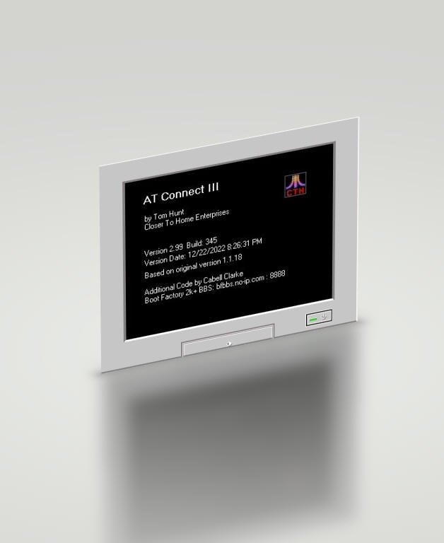

AT_Connect III Help File
Copyright © 2009-2026; Cabell Clarke; ALL RIGHTS RESERVED.
Revised: 10.3.26
AT_Telnet is Copyright © Tom Hunt; Closer To
Home Enterprises
AT_Connect is Copyright © Tom Hunt; Closer To
Home Enterprises, and Cabell Clarke; Boot Factory BBS
BBS Editor, ATEditor, URL Detection, The
Box, Scrollback System, Quoting System, AutoPause, Help System
and additional code are
Copyright © Cabell Clarke
Screens and References to Bob Term are
Copyright © Robert Puff Help
Contact: Cabell Clarke (BF2k+) My
BBS - The Boot Factory 2k+ : bfbbs.no-ip.com Port :
8888
AtariAge: bf2k+
Beta Testers: Tillek, Amis, John Polka,
[Giarc], Bob_C, Slacker, mhansel739
Help on Help: mhansel739 |
|
| Change Log
v3.24 - Build: 958 - 10.4.26
(Katara) (BugFix release)
- Added session timer to display elapsed time in
log, titlebar and status form. Session defined as time between ATC
start and ATC stop.
- Added user-defined titlebar message. It can be
displayed by itself or as part of the revolving marquee.
- Added the ConvertMacro processing to the
ConnectMsg and DisconnectMsg display to allow the carriage return <cr> as
a valid entry.
Example: “CONNECT...<cr>” becomes CONNECT… with a CR (155) on the end
which gets executed by ATC.
- Changed Session Number from LONG int to string
(format: YYMMDDHHMMSS)
- Minor internal changes.
Bugs
- Fixed missing cursor after screenscroll that I
somehow introduced.
- Fixed annoying bell when a Box changed event
forced a beep even when pasting to the BOX.
- Disabled the Combo box in the BBS form when online
to prevent data corruption possibility.
- Nasty bug in
the ATEditor 'Clear' button would crash AT_Connect. (This is the
reason for the bugfix release.)
v3.23 - Build: 922 - 4.12.26 (Katara) (maintenance
release)
- Set the max number of BBSes supported to 500.
Having a max number of 65535 caused other problems that I did not
anticipate.
- Added a 'View / Hide Gateway' button to the BBS
Editor form for sizing purposes. It does not affect the use of the
gateway.
- On the initial installation of ATC, where files,
folders, and configs are created, I tweaked the window placement to make a
cleaner initial installation.
- Minor internal changes to some variable structures
and placements.
v3.22 - Build: 912 - 3.19.26 (Katara)
-
Added support for the new Atari
BBS gateway created by AMIS. This allows you to connect to your favorite BBS
thru the gateway and still have access to your assigned macros for that
BBS.
-
Added combo box to BBS form to
allow selection of BBS via drop-down list rather than having to use the
Next / Prev buttons.
-
Added a BBSList automatic
backup function which can be enabled or disabled. BBS form indicates
when the BBS needs a backup and it can be done manually or automatically at
startup depending on how it is configured.
-
Added a Backup folder for
backed up BBS Lists and CFG files.
-
Added 'Abort' switch to splash
screen. This will shut down AT_Connect before it starts.
-
Added a 'Backup CFG File'
button at the bottom of the Config form and a backup folder option under the 'Paths'
tab.
-
Major Clean-up to 'AddBBS', 'CopyBBS'
and 'DeleteBBS' functions on the BBS form. Fixed 'DeleteBBS' function
so it will not attempt to delete an already deleted record.
-
Added ability to add a BBS by
editing an empty BBS record.
-
Removed the old BBSMap from the
AT3_BBS.ini file. This also allows the max number of supported BBSes
to go from 255 to 65535... not that we really needed more but removing the
map cleaned up the BBSList file. I HATED the map.
-
Removed the 'Fix BBSList' function
as it is no longer needed.
-
Added a new Log Header to 'Rename
Log' and 'Clear Log' functions. The header contains additional info at
the top of the newly created log file.
-
Added ability to type inverse
chars into a BBS using the 'inverse chars' checkbox in the ATEditor.
The BBS must also support the inverse chars. The 'inverse char'
checkbox is now highlighted RED
when inverse chars are enabled.
-
Added a "Connecting to <bbsname>..."
message at the beginning of each connection attempt. This also
reflects using the gateway for the connection.
-
Added a field in the BBS form
for the date that the Max BPS was achieved.
-
Lots of minor changes:
◦ BBS form 'Save' buttons now have a yellow
background when a 'save' is needed.
◦ Backspace key now works in Inverse Char
mode.
◦ Added space to generic quote string.
◦ Added minor color changes to some forms
and buttons.
◦ ATEditor Text window flattened.
◦ Edited a few ToolTips.
◦ The background 'Atari' image made the
help file hard to read so I removed it.
◦ Quite a few minor internal changes that
are not noticeable.
-
New Dragon Name: Katara
Bugs
-
While not actually a bug, the
BBS form has always loaded the first record in the BBS list when ATC starts
up. Now it loads the first record enabled in the dial list instead of
record #1.
-
'AddBBS', 'CopyBBS' and 'DeleteBBS'
functions all had bugs in them. They should be cleaned up now.
-
The MaxBaud bug has finally
been squashed (hopefully). This would cause bogus data to be written
into the BBS record and was most noticeable when the MaxBaud value was
different. It could also have been affecting other data in the BBS
record but this was not ever noticed.
v3.20 - Build:829 - 4.18.25 (Apophys)
-
Added seven new background
screen colors which can be chosen in the configuration screen. ATC
restart required after choice. Colors: Atari Classic white on blue, Green
Screen, Amber Waves, Purple Haze, Midnight Blue; pSycH0dElikA; Paperwhite
-
Changed the width of the
main screen to make it a little smaller. This was actually a somewhat major
change to the system.
-
Removed most of the old 3d
look which came from the VB 6 environment... like checkboxes, data-entry
fields, etc.
-
Added four new buttons '>>>'
and '<<<' to the BBS form to allow moving quickly to the beginning and end of BBS records.
-
Re-programmed much of the
BBS form and added functionality. Some of the buttons have changed.
The BBS data structure is now record-based rather than number-based.
Removed the old 'Save + Close + Connect' button. Also removed the
'Import BBS' button which had never been programmed and was not high on the
list..
-
The 'Fix BBS List function'
is reprogrammed.
-
Added the animated startup
'Moji named 'ATC Ready' which can be programmed to display anything you
like. This replaced one of the old Bobterm pictures which did not
display correctly with some of the new background colors.
-
Added the 'Pick any file to
view' option to the capture menu.
-
Added the 'Slow display'
checkbox to the capture configuration screen for displaying files at fast or
slow speeds.
-
Added the 'MaxBPS achieved'
green indicator on the BBS form which lights up when the current MaxBPS
record for this BBS has been broken.
-
Translated the <TAB> key
which had never been done in 25 years.
-
Re-enabled connections from
the BBS form via a new 'Connect' button located on the form so that BBSes
that are 'hidden' from the dial list can still be connected to.
-
New Dragon Name: Apophys
Bugs
-
Fixed an old bug which would
crash ATC when a specific type of screen was displayed in 80 column mode.
This had to be fixed in four different functions. Thanks to Matt H. for
finding this one.
-
Clicking on a blank URL no
longer processes the blank URL.
-
Fixed a bug in the 'View
capture file' function which caused it to print too many chars.
-
Bug in 'CopyBBS' function
could crash ATC in certain situations.
-
Fixed a disconnect issue
when Winsock throws an error 10053 - thanks to Slacker for help with this
one.
-
Fixed a bug that was loading
frmLastURL before the form positions had been read from config file.
-
Fixed a bug where the
different form positions needed to be written upon first installation and
first running of ATC.
v3.14 -Build:717 - 2.1.25 (Xeraxes)
-
Added bits per second
calculations and chars per second measurement to create the new Speed
Check mode. It can be enabled in the Status Form as well as the
Config form.
-
Also added the Speed Test
which disables the screen and keyboard for better accuracy in
speed tests. Average and current speeds displayed in the Status
form.
-
Added 'Maxbps' speed calc
value to
BBS record and log entry.
-
Added the 'AutoNext'
feature which detects when a BBS logs you off, and allows you to hit
<Enter> and immediately connect to the next BBS in the combo box. It
is very FAST.
-
Added manual quote prefix
( Q>) to quoting system for adding the quotee's initials or whatever.
This overrides the default prefix set in the Config form until
disconnection from the BBS.
-
Added {Ctrl}-Z keystroke in the Box to
place an ATASCII CR (155) in the current cursor position for better
formatting of quotes and things like separation of quotes within quotes.
-
Pre-loaded the session
number with a 1 if it was equal to 0.
-
Character Totalizer manual
calculation is now a log entry when executed. It is still executed
automatically when logging off.
-
Added the “one char at a
time” Macro send for cases where it is needed. Can be selected in the BBS
record for each individual BBS.
-
'AutoPause' function expanded to work with FoReM XE.
-
Changed the Autopause command buttons to the following:
◦ 'Again' – redisplays the previous message and after a
delay, sends {Ctrl}-S to pause it.
◦ '. . .' - restarts the paused message and pauses it
again after the delay.
◦ '! ! !' - restarts the paused message and displays
until the end of message.
◦ All three of these work this way for BBS:Express v1
and FoReM XE.
-
Added speed (maxbps) to
Time Online report.
-
Better quoting in 80 cols.
-
Added the Graphics Mode
enable (/g) reminder to the ATE top of form (red label) before sending
ATEditor data to screen.
-
Increased size of BBS Name
in Status Form.
-
Added a 'Status' button on
the control panel to open the status form when it is closed.
-
Added a 'Beep on
Connection' notification option setting in Config form.
-
Added an 'ALL ON / All
OFF' button in the Config form for toggling between 'Classic AT_Telnet'
view
and 'AT_Connect 3' view. One button toggles all options on and off.
-
Added a Yes/No query to
the Delete Log file question.
-
Modifications to BaudSim
mode to allow a wider range of speed (0-9 instead of 0-5). The new
wider range allows more flexibility in the baud control for different PCs.
I found that even at the slowest baud rate, my Core i9 PC still ran full
speed with no apparent slowdown. The wider range along with an
additional 2ms multiplier increased the control therefore the appearance
of a baud rate where none exists. (A value of 9 appears to be approx
300Baud.)
-
Beginning to use Git for
version control. Github for Windows on the local PC. There is
no remote repository (yet).
-
General Cleanup.
Bugs
-
Fixed a bug in combo box
select bbs code.
-
Fixed a bug in "Choose
Port" section of code.
-
Fixed a bug in the
character Speed Check averaging system where the chars would only be
averaged in BaudSim mode.
-
Fixed a bug that would
crash ATC when the incoming char monitor in the status form was enabled.
-
Fixed a bug in the
‘Autonext’ code which caused a ATC crash when the combo1.listindex tried
to increment past the combo1.listcount.
-
Fixed an OLD bug that
prevented the BaudSim Value from being saved to the config file.
-
Fixed a REAL OLD bug in the 'Print
Screen'
button on the menu bar that would crash ATC if the print dialog 'cancel'
button was pushed. Thanks to Slacker for finding this one.
I had not pushed that button in at least 20 years.
v3.12 -Build:602 - 12.14.23 (Xeraxes)
-
Added the AutoPause
feature for slowing down the message displays on BBSes with no page length
setting.
-
Added the Status Window
for status information during connections. It displays the BBS name,
URL and Port as well as the incoming character counts. It also has a
provision for entering some text into the system log as a log entry.
-
Added a flag in the config
page to enable / disable clearing the box when the 'Scrollback to Box'
button is pressed.
-
Added session numbers for
knowing how many ATC sessions you have experienced.
-
Added additional logging
for some errors.
-
Added the ==== separator
for the log session entries making the log a little easier to read.
-
Modified the 'View System
Log' button to move the cursor to the end of the log when opening it.
-
General cleanup of
logging...
-
Modified 'Look & Feel' of
the Quoting and ChXbox systems as well as general cleanup of these
systems.
-
Added the status bar value to
the status field 'tooltiptext' property so if a status is longer than the
status window can display, hovering the cursor over the status field will
display the entire contents of the field in the tooltip.
-
Renamed the CHX1,2,3 files
to _CHX1,2,3. Filename prefixed with an underscore to make them rise
to the top of the files display.
-
Added the 'No Word Wrap'
quoting modification for making the quotes look better on a Carina BBS
system. Carina tends to modify the format of the messages even after they
are entered and saved. This option helps with making the quotes a
little better to view if you choose to use it. This feature also
swatted the chr(13) - chr(10) display bug in the Carina quotes.
-
Changed the colors of the
quote step indicator bar from Red to
Green.
-
Added a 'Yes / No' query
to the 'Clear System Log' function.
-
General Cleanup.
Bugs
-
Bug fixed - Send to BBS
function would crash ATC if not online.
-
Bug fixed - bug in Help
file display code
-
Bug fixed - not really a
bug but using the Previous (<<) and Next (>>) buttons in the BBS editor now
forces a re-selection of the BBS in the combo box in order to better keep it all
in sync.
-
Bug fixed - Swatted the
Ctrl-M bug that has been in the program since 2000.
-
Fixed a problem with the
Help file installation during setup.
v3.11 -Build:548 - 9.15.23 (Xeraxes)
-
Added the 'ChXbox Creation System' which uses a
combination of 'The Box' and the 'ATEditor' to create cute little ATASCII chXboxes for graphics-enabled message bases.
The chXboxes are also correctly visible in ASCII and ANSI connections.
-
Added an optional Incoming Character Count
display for each ATC session as well as a totalizer. Both of these
counts are displayed at the end of the system log.
-
Made 'classic mode' more classic by adding the
'Enable Online Timer' function to classic check boxes group in Configuration
file.
-
Added "Last Time Online" data to BBS record to
display the length of the last connection to that BBS.
-
Added the "2) Edit Box" button to the quoting
system to place the cursor into the box quickly at position 0 in the box
rather than the old manual method.
-
Added quote step indicators (
which look like this: ______ ) below each button to
remind you of the next step while creating quotes.
-
Updated ATEditor to optionally create a file when
using the 'Send to Main' function.
-
Cleanup of the Total Online Report
-
Added the Signature function for each BBS record
so each BBS can have its own signature.
-
Added the 'Scrollback Abort' button for stopping
the scrollback function.
-
Added the 'Box to ATE' button for copying the
contents of the box to the ATEditor. Why do we need this? I don't
know but I added it anyway because I could. (And now it is used for the chXbox
system.)
-
Moved Quoting buttons into different positions
around the Box to make quoting more intuitive.
-
Enlarged the Log Form to prevent word wrapping of
log entries.
-
Minor Cleanup of program and help file.
Bugs
-
BUG Fixed - 'Scrollback to Box' function would
crash AT_Connect if there were less than 2048 chars in the scrollback
buffer. Fixed by requiring 2048 chars in the buffer before 'SB to
Box' will do anything.
-
BUG Fixed - bug in 'View Capture' function which
prevented some files from being viewed.
-
BUG Fixed - bug in Time Online function would
erase the time if the BBS record got changed to a different BBS and then a
logoff occurred. Disabled the problem buttons that caused this so the
BBS record could not be changed while online. ( '>>', '<<', and
'BBS Select' combo box)
-
BUG Fixed - BBS Select combo box was not properly
updated when a BBS was changed from 'Show in List' to 'Don't show in
list' (and vice versa). Now the combo box is reset to zero (default) if
this function is toggled.
v3.10 -Build:516 - 3.10.23 (Xeraxes)
-
Added the 'Scrollback'
feature which when enabled, saves the last 2048 chars in a circular buffer
which can be re-displayed in user-defined-sized chunks on demand. The
playback is slightly delayed for ease of viewing and 'Pause'
and 'Resume' buttons are available.
-
Added the Automated Message
Quoting System for quoting parts of messages when entering a new message.
This feature uses the Scrollback Buffer for capturing the contents of
previous messages.
-
Added the Online timer which
displays below the Macro Keys in the Control Panel. This display is
updated every second.
-
Added the Online Timer
totalizer for the total time spent on each BBS. This is viewed in the
BBS Editor form.
-
Added the 'Time Online
Report' which displays & Saves the total number of connects and time online
for each BBS.
-
Added the 'System Log file'
which can be enabled or disabled in the config form. This log file is
named 'AT3_Log.txt' and is located in the System Folder.
Right-Clicking the screen displays the Capture file menu which also holds a
menu entry for viewing this log in a separate form. In this form, the
log can be saved (archived), cleared or deleted.
-
Added an 'Export URL' button
to the URL form for exporting the URLs to a text file.
-
Increased the number of URLs
displayed in the form from 5 to 10.
-
Added some initialization
variable values for the first run setup of ATC.
-
Fixed some mislabeled
tool-tip-texts in the control panel.
-
New Dragon Name: Xeraxes
v3.01 -Build:466 - 2.15.23 (Vhagar)
v3.00 -Build:465 - 2.14.23 (Vhagar)
-
Migrated
AT_Telnet II to new
name: AT_Connect III
-
Created code for
a new System Folder (AT_Connect) which resides in the users 'Documents'
folder. This will overcome the UAC issues outlined in v2.12 below. This
folder is automagically created on the initial running of AT_Connect.
Enlarged the config form to display the new system folder (read-only).
Modified code for the config file, the bbs file, the screen dump system
and the
capture file to reside
in this new folder tree.
-
Added
'The
Box' (or Text Window) for easy editing of messages before sending them to the BBS.
Lots of features in this function... supports 40 and 80 columns; is
configured for use in the BBS record for each BBS; can be made completely
invisible to the user if desired; monitors the current number of chars in
the editor window; has a right column alarm for BBSes that don't have word
wrap in their message editors; the {Alt} - T keystroke is used to toggle
between the main screen and the box editor. Focus Indicator for Main
screen as well as Text Window makes it easy to tell who has the focus; Can
send formatted text to a BBS. Can optionally be hidden from viewing.
-
Added a new
system to automagically detect URLs in the incoming data stream and convert
them into one-click links that can be accessed from within AT_Connect.
The last ten links are saved for the current session and can optionally be
cleared for the current session. This detection can be enabled or
disabled in configuration and can optionally be hidden from view.
-
Added the
ATEditor for capturing, editing and sending almost anything ATASCII.
Great for making those little 'Mojis and any other combination of text,
graphics characters and inverse characters in a macro-like format for
sending to the BBS. Can optionally be hidden from view.
-
Added a 'Capture' folder for saving all
captured data files.
-
Added the ability to save the window
positions for the Main screen, BBS Editor, ATEditor, Last5URL and WebSite
windows. These positions are saved in the config file so the windows
always return to where you want them positioned.
-
Added a 'Capture
in process' indicator (flashing green bar at the top of the main screen) to help remind you that you are in
'capture' mode.
-
Simplified the
BaudSim function to entering an integer only; 0 for fastest; 5 for slowest.
(5 is VERY slow - not recommended. Typically 0 and 1 are all that is
needed.)
-
Added a reminder
to the 'Hidden' button on the BBS Editor form to prompt to create a new
AT_Connect password in the configuration form when none exists.
-
Added encryption
to hidden macros for storage in the BBS file.
-
Gave new versions dragon
names - this one is Vhagar.
-
Various cosmetic changes throughout...
including this help file!
Bugs
-
Fixed a bug
where a Clear Screen (ATASCII 125) would not be executed if it followed a
Ctrl-Insert (ATASCII 255). This bug would actually prevent anything
that followed a Ctrl-Ins from executing. This fixed a LOT of things in
the display functions.
-
Fixed a BUG
in the Portlist creation function.
-
Fixed a BUG in
the BBS Editor that allowed editing of hidden macros while they were locked
and protected from sight.
-
Fixed the old
Control-Delete processing issue (somewhat), which has existed in ATx for
more than 20 years, however there are still others to be
identified and fixed.
-
Found that the
keyclick sound (sp0000.wav) was not being installed with the new AT_Connect
setup package and fixed it.
v2.12 - 6.21.20
-
Tested under
Windows 10 (Note: UAC issues cause some files to reside in strange places.
To be documented and fixed in v3.)
-
Installing Visual Basic 6 into my
Windows 10 box allowed me to work in a host environment rather than on a
virtual machine. The Win10 compiled version of the program displays to
the screen at a much higher rate of speed... like going from 2400 baud to
9600 baud.
-
Masked an error
in the Ctrl-Del key screen processing. This prevents the program from
crashing even though the key is not correctly processed and displayed.
I will try to fix this in v3.
-
Added a function
to clear the incoming buffer when the connection is broken. This can
be enabled or disabled in the Config screen.
-
Added
UseBBSEditor function for displaying the BBS Editor form next to the
AT_Telnet screen during your BBS sessions allowing you to view info about
the BBS as you connect to it.
-
Various minor
changes and fixes.
-
Not released to the public.
v2.10 - 1.18.13
-
Removed the BBS
Database and went back to the old text file for BBSes. The DB
increased the size of the setup ZIP file from 1.5 mb to 7 mb. I didn't
like that.
-
Tested and
working in Windows 7 x64 (in compatibility mode).
-
Added 'Browse'
buttons for filling in browser and screen dump path fields in Config form.
-
Added 'Abort'
connect function to the 'Connect' button.
-
Added multiple
Ports for each BBS in BBS Editor.
-
Added 'Edit
RAW BBS List' feature with config disable/enable feature.
-
Added 'Fix BBS
List' feature with config disable/enable feature.
-
Added ability
to mark a BBS as down so it doesn't show up in dial list box without
having to delete it from the BBS List.
-
Added Password
Tab to configuration form.
-
Added visual
masking and password protection to Macros to hide passwords and logins
from sight, etc.
-
Various minor
changes and fixes.
v2.00 - 11.5.09
- Version 2 Release
-
Added the ATDB BBS
database in place of the old text bbs list. ATDB adds a whole slew of new
functions including keyboard macros, individual BBS configuration, session
information and others.
-
Added ‘Ctrl-C’
processing for aborting long text files. This works as well as can be
expected in light of the speed at which the data comes across the winsock
pipe.
-
Cleaned up a few
minor bugs.
-
Minor cosmetic
changes throughout the program.
v1.20
-
Changed the prompts
in the marquee to reflect the CTH new website and bbs URL’s.
-
Minor modifications to the
status bar.
-
Added the
‘PrintScreen’ function to print the contents of the current screen. Click
the printer icon to access this function.
-
Added code to
update the BBS list combo box after the list was edited using notepad.
-
Added ‘CAPTURE’
mode for capturing text from the BBS. Right-clicking the screen opens the
“CAPTURE MENU” for access to all capture functions. While viewing the
capture file, an ‘Abort Capture’ button is visible at the bottom of the
window for aborting the viewing.
-
Added the About
Dialog Box and a FUJI icon to the toolbar for “About” access.
-
Enhanced the
Winsock Error code to better describe the error in a dialog box.
-
Re-enabled the
BaudSim function.
-
Fixed a bug which
left data in the Winsock Buffer at odd times.
v1.10
-
Cursor Controls –
added support for the four arrows, Control-Insert, Control-Delete,
Shift-Insert, Shift-Delete, and Tab.
-
Changed the
CursorOn( ) and CursorOff( ) subroutines to support non-destructive printing
to the screen. This is necessary when the cursor passes over an existing
char on the screen to keep it from wiping out that char during calls to
either of these subs.
-
Changed all char
sizes from 15 to 16 to keep the cursor from wiping out 1 pixel from any char
it passes next to. Had to change the Charset image( atari4.gif ) by adding
one pixel of white at the end of each row which ended in an inverse char
because the above change made the chars at the end of that row have a one
pixel dark line at the end of the char. For example, if AT1 printed another
inverse char next to one of these chars, the two chars would appear to be
separated by a 1 pixel dark line. (Changing the char size from 15 to 16
introduced this “feature”).
-
Added the Baud Rate
simulator for smoother viewing of ATASCII cartoons. This feature is still
under construction. Even though it appears to work fine, I am not totally
happy with it.
-
Fixed a bug which
would stop the program if the remote computer closed the connection and you
typed a char. Sending a char to Winsock generated a fatal error. The fix was
to set the “Connected” variable False when the remote BBS disconnected.
-
Added code to
properly process ATASCII 255 (Control-Insert) which the Telnet protocol uses
for an escape sequence.
-
Made use of the VB
internal Project properties for Application Version control to help keep me
straight.
-
Centered the Splash
Form and MDI form in the middle of the screen.
-
Added the
“StayAlive” button and code to send a single configurable char (default =
“/”) to the remote BBS to stay connected while viewing a long text file in
Baud Simulator mode.
-
Added a StatusBar
at the bottom of the form to replace the “Connection Status” Textbox.
-
Added the Appinfo
to this statusbar.
-
Added a toolbar for
quick access to all commands.
-
Fixed ShiftInsert()
and ShiftDelete() to move the cursor back to X = 0.
-
Rewrote the Tab
routines to fix a bug in them.
-
Added the
AUTOSTAYALIVE Boolean. When this var is True, “StayAlive” is enabled upon
connection to a BBS.
-
Added the
AUTOBAUDSIM Boolean. When this var is True, “BaudSim” is enabled upon
connection to a BBS.
-
Added the
Configuration Dialog and Config file which retains the values of “AutoBaudSim”,
“AutoStayAlive” and the “StayAliveChar” (“/” or “whatever”).
-
Added two more
marquee items to describe BaudSim and StayAlive.
v1.00 - Initial
Release |


|